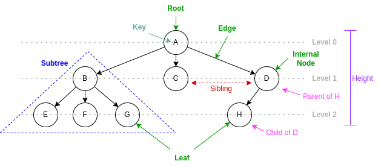
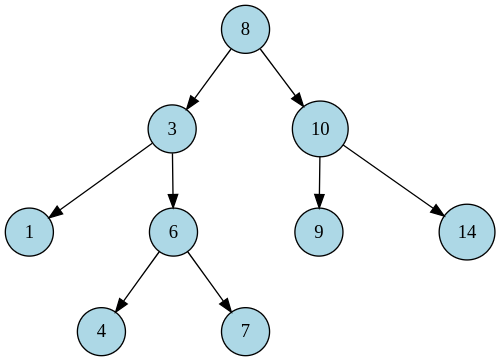

Data Structure and Algorithm Design
Module 11
Xingang (Ian) Fang
Sections
General Tree Concepts
Binary Search Trees
Tree Data Structure
Xingang (Ian) Fang
Outline
Definitions
Tree Concepts
Applications
Operations
Implementation variations
Binary tree
Definitions
In graph theory, a tree is a connected and acyclic undirected graph.
focus on connectivity and acyclicity
In computer science, a tree is a hierarchical data structure composed of nodes connected by edges, where each node has a parent (except for the root node) and zero or more children.
focus on hierarchy and parent-child relationship
Recursive definition: root and subtrees, each of which is also a tree
Tree Concepts
Concepts: root, internal node, leaf, edge, subtree, sibling, parent, child, level, height
Other Concepts
Degree of a node or a tree
Depth
Ancestor and descendant
Path
Distance
Ordered Unordered
Applications
File system (directory, sub-directory, and file)
Decision making (decision tree)
Indexing (binary search tree, B-tree)
Parsing tree
Heap (complete binary tree)
Blockchain (Merkle tree)
Search-based Artificial Intelligence (game tree)
{kind=link}
Operations
Search
Insertion
Deletion
Traversal
Breadth-first traversal
Depth-first traversal
Pre-order traversal
Post-order traversal
Height
Degree
Implementation Variations
Each node stores a variable-length list of references to child nodes
Each node stores a reference to its first child and a reference to its next sibling
Each node stores a reference to its parent
{kind=link}
First child next sibling representation
Credit: Data Structures and Algorithm Analysis in C++, 4th Edition. Mark Allen Weiss.
Binary Tree
Only concepts and operations that are different from general trees are covered.
Definition: Degree 2 ordered tree.
Concepts:
Left child and right child
Operations:
In-order traversal
Variations:
Full binary tree
Complete binary tree
Perfect binary tree
Applications:
Binary search tree
Expression parsing
Decision tree
Heap
Huffman coding
{kind=link}
Binary Search Tree
Xingang (Ian) Fang
Outline
Definition
Behaviors
Implementation
Drawbacks
Applications
Definition and Behaviors
Definition A binary search tree (BST) is a binary tree, in which for every node, its left child has a smaller or equal key than itself while its right child has a greater or equal key than itself.
Behaviors
Insertion
Deletion
Search
Traversal
In-order traversal: left subtree, root, right subtree
Ascending ordered output
Implementation
Algorithms that happens from top to bottom
Easy to implement either iteratively or recursively
search
insert
Algorithms that happens from bottom to top
Easy to implement recursively; Hard to implement iteratively (must use stack)
subtree removal (may be used in the destruction of a tree)
find min node or find max node (part of remove)
in-order traversal
pre-order traversal
Implementation (cont’d)
Search
if equal, found
if smaller, search left subtree
if greater, search right subtree
Insertion
if equal, do nothing
if smaller, insert to left subtree
if left is empty, insert
if greater, insert to right subtree
if right is empty, insert
Removal
remove leaf node: simply remove it
remove node with one child: replace the node with its child
remove node with two children
find the min node in the right subtree (successor)
replace the node to be removed with the min node
remove the min node (min node has at most one child)
Drawbacks of naive BST
Algorithm efficiency depends on the average height of the BST
BST may degrade a very unbalanced form or even to a linked list
Solution 1: randomize the order of insertion
Solution 2: add balancing mechanism
Self-balancing
External balancing
Solution 3: move the most recently accessed node toward the root
Only optimize the search performance for a specific access pattern
No guarantee for the worst case
Splay tree
Applications
Indexing: store a set of references to records in a BST and use the key as the search key.
Tree Sort: sort a sequence of elements by building a BST and then traversing it in-order.
Tree Map: store a set of (key, value) pairs in a BST and use the key as the search key.
Tree Set: store a set of elements in a BST and use the element as the search key.